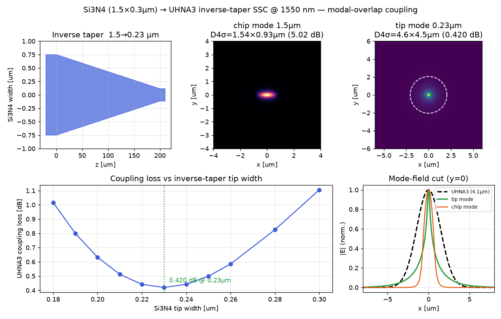
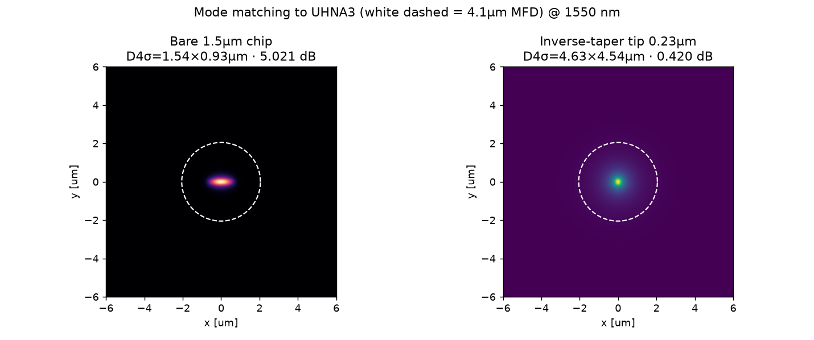

Si₃N₄ 1.5 × 0.3 µm core (3 µm thermal SiO₂ BOX, 5 µm SiO₂ top clad) ↔ UHNA3 ultra-high-NA fiber at 1550 nm — an inverse taper delocalizes the mode to match the fiber. Coupling loss 0.42 dB (mode-overlap integral), down from 5.0 dB bare.
UHNA3 (Nufern) is an ultra-high-NA fiber: NA 0.35, MFD ≈ 4.1 µm at 1550 nm. The last field is the mode-field diameter the inverse-taper tip presents to the fiber; the tip width is chosen so this ≈ the fiber MFD. Set it equal to the bare-core MFD to see the loss without a converter.
The two FD values are the authoritative mode-overlap results from the sparse finite-difference eigensolver (downloads below). The interactive row is a quick Gaussian–Gaussian overlap estimate as you vary the tip-mode MFD.
Mode-field cross-section — blue: UHNA3 fiber Gaussian, red dashed: bare Si₃N₄ core mode (tiny), green: expanded inverse-taper tip mode. Larger overlap with the fiber means lower loss.
Butt-coupling loss is the mode-overlap integral between the fiber mode and the waveguide (tip) mode:
The 2-D waveguide mode E_wg is found by solving the scalar Helmholtz eigenproblem (∂²ₓ + ∂²ᵧ)E + k₀²n(x,y)²E = β²E on the real Si₃N₄/SiO₂ index cross-section with a sparse shift-invert eigensolver (largest n_eff); E_fiber is the UHNA3 field (Gaussian, MFD 4.1 µm).
Why not an imaginary-distance BPM mode solve. For a high-contrast Si₃N₄ wire near cutoff, the paraxial imaginary-distance iteration is unstable — it collapses onto a spurious tightly-bound mode. The direct finite-difference eigensolve is grid-convergent and robust, so it is used for the reported numbers.
Sweeping the Si₃N₄ tip width and overlapping each tip mode with the UHNA3 field gives a clear minimum. The mode expands monotonically as the tip narrows; the loss bottoms out where the tip mode best matches the 4.1 µm fiber.
| Quantity | Value |
|---|---|
| Coupling loss — inverse-taper tip ↔ UHNA3 | 0.420 dB (η = 90.78 %) |
| Coupling loss — bare 1.5 µm core (no taper) | 5.02 dB (η = 31.5 %) |
| Optimal Si₃N₄ tip width | 0.23 µm (n_eff = 1.4491) |
| Tip mode field diameter (D4σ) | 4.63 × 4.54 µm |
| Bare core mode field diameter (D4σ) | 1.54 × 0.93 µm |
| Taper length (chip 1.5 µm → tip) | 200 µm (adiabatic) |
The optimum is broad — a tip width in ≈ 0.22–0.24 µm keeps the loss under 0.45 dB, giving good lithography tolerance. The residual ≈ 9 % (0.42 dB) is the intrinsic shape mismatch between the near-cutoff waveguide mode (peaked centre, exponential tails) and the fiber's Gaussian; even when the D4σ matches, the overlap is capped near 91 %. The 3 µm thermal-oxide BOX is assumed thick enough that substrate leakage of the ≈ 4.6 µm tip mode is negligible.


Everything needed to reproduce the result above:
Run with python3 run_sin_uhna3_ssc_1550.py --out . (needs numpy, scipy, gdstk, matplotlib). Coupling loss is the mode-overlap integral between the eigensolver's 2-D waveguide mode and the UHNA3 field; pass --dx 0.018 --dy 0.013 for a finer convergence check.
n_si3n4.py n_silica.py Coupling loss tool → MFD & coupling loss tool →
{kind=link}
{kind=link}